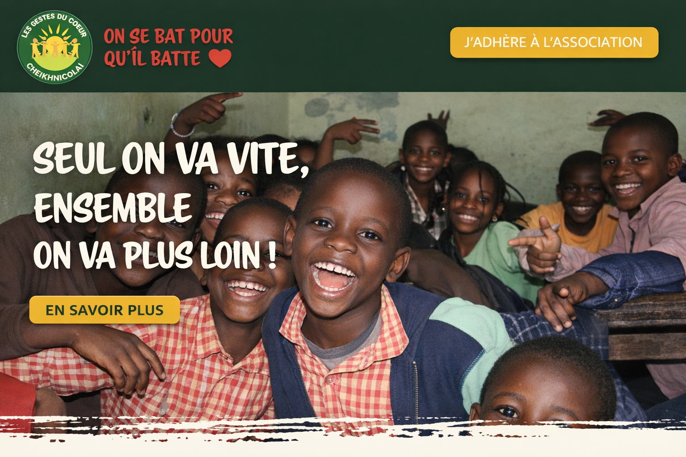

Site Wordpress / théme sur mesure
Cheikhnico
Création d'un thème sur-mesure WordPress et migration + refonte du site de l'association cheikhnico de Drupal à WordPress.
Applications web, logicielles et APIs — mes projets.
